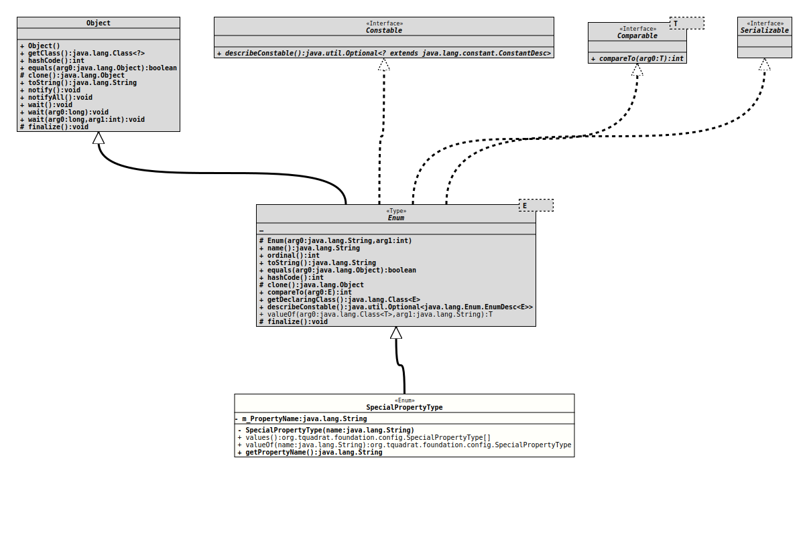

Enum Class SpecialPropertyType
- All Implemented Interfaces:
Serializable,Comparable<SpecialPropertyType>,Constable
- Author:
- Thomas Thrien (thomas.thrien@tquadrat.org)
- Version:
- $Id: SpecialPropertyType.java 1001 2022-01-29 16:42:15Z tquadrat $
- Since:
- 0.0.1
- See Also:
- UML Diagram
-

UML Diagram for "org.tquadrat.foundation.config.SpecialPropertyType"
{kind=link}
-
Nested Class Summary
Nested classes/interfaces inherited from class java.lang.Enum
Enum.EnumDesc<E extends Enum<E>> -
Enum Constant Summary
Enum ConstantsEnum ConstantDescriptionThe currentCharset.The currentClock.The currentLocale.The message prefix.The process id.A random number generator.TheResourceBundlefor messages and other texts.The session key.The current time zone. -
Field Summary
Fields -
Constructor Summary
ConstructorsModifierConstructorDescriptionprivateSpecialPropertyType(String name) Creates a new instance ofSpecialPropertyType. -
Method Summary
Modifier and TypeMethodDescriptionfinal StringReturns the property name for the special property.static SpecialPropertyTypeReturns the enum constant of this class with the specified name.static SpecialPropertyType[]values()Returns an array containing the constants of this enum class, in the order they are declared.
-
Enum Constant Details
-
CONFIG_PROPERTY_CHARSET
The current
Charset.The property will be initialised with a call to
Charset.defaultCharset(), and the same will be made also when the setter is called with the argumentnulllater.Getter and setter for this special are defined in
ConfigBeanSpec.- See Also:
-
CONFIG_PROPERTY_CLOCK
The current
Clock.The property will be initialised with a call to
Clock.systemUTC(), and the same call will be made also when the setter is called with the argumentnulllater.Getter and setter for this special property can be added to a configuration bean specification.
- See Also:
-
CONFIG_PROPERTY_LOCALE
The current
Locale.The property will be initialised with a call to
Locale.getDefault(), and the same call will be made also when the setter is called with the argumentnull.Getter and setter for this property are defined in
ConfigBeanSpec.- See Also:
-
CONFIG_PROPERTY_MESSAGEPREFIX
@API(status=STABLE, since="0.1.0") public static final SpecialPropertyType CONFIG_PROPERTY_MESSAGEPREFIXThe message prefix.
A getter for this special property is added to a configuration bean specification with the
I18nSupport; a setter for it is not allowed. -
CONFIG_PROPERTY_PID
The process id.
A getter for this special property can be added to a configuration bean specification; a setter for it is not allowed.
-
CONFIG_PROPERTY_RANDOM
A random number generator.
A getter for this special property can be added to a configuration bean specification; a setter for it is not allowed.
-
CONFIG_PROPERTY_RESOURCEBUNDLE
@API(status=STABLE, since="0.0.1") public static final SpecialPropertyType CONFIG_PROPERTY_RESOURCEBUNDLEThe
ResourceBundlefor messages and other texts.A getter for this property is defined in
ConfigBeanSpec, a setter is optional.- Note:
-
- This property is also used internally.
- See Also:
-
CONFIG_PROPERTY_SESSION
The session key.
A getter for this special property is defined in
SessionBeanSpec; a setter for it is not allowed, and the special property may not be used in other contexts than that of a session bean.- See Also:
-
CONFIG_PROPERTY_TIMEZONE
The current time zone.
The property will be initialised with a call to
ZoneId.systemDefault(), and this call will be made also when the setter is called with the argumentnulllater.Getter and setter for this property are defined in
ConfigBeanSpec.- See Also:
-
-
Field Details
-
m_PropertyName
The name of the property.
-
-
Constructor Details
-
SpecialPropertyType
Creates a new instance ofSpecialPropertyType.- Parameters:
name- The name of the property.
-
-
Method Details
-
values
Returns an array containing the constants of this enum class, in the order they are declared.- Returns:
- an array containing the constants of this enum class, in the order they are declared
-
valueOf
Returns the enum constant of this class with the specified name. The string must match exactly an identifier used to declare an enum constant in this class. (Extraneous whitespace characters are not permitted.)- Parameters:
name- the name of the enum constant to be returned.- Returns:
- the enum constant with the specified name
- Throws:
IllegalArgumentException- if this enum class has no constant with the specified nameNullPointerException- if the argument is null
-
getPropertyName
Returns the property name for the special property.- Returns:
- The property name.
-